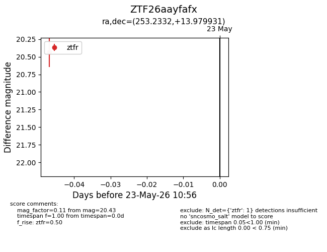
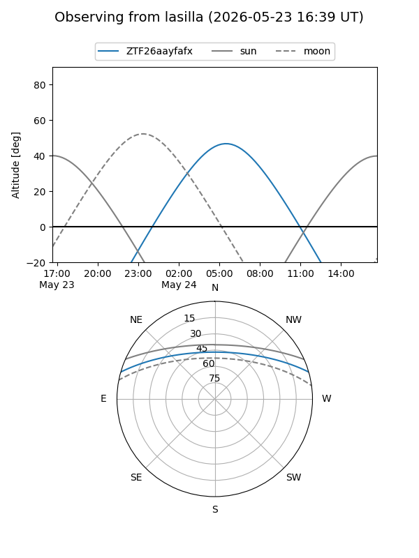
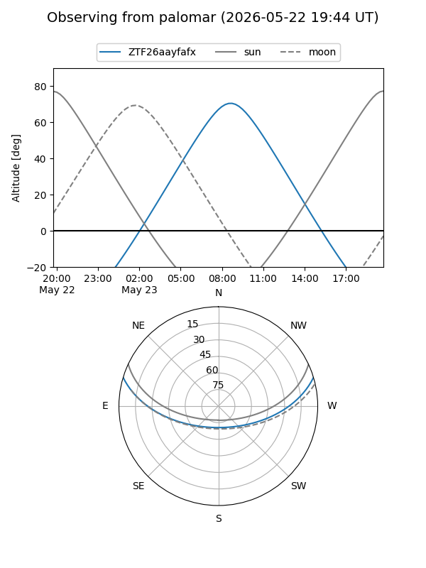

ZTF26aayfafx
Target ZTF26aayfafx at 2026-05-23 10:57
Aliases and brokers:
lsst-FINK: link
lsst-Lasair: link
lsst-ALeRCE: link
ztf-FINK: link
ztf-Lasair: link
ztf-ALeRCE: link
alt names
ZTF26aayfafx (ztf,fink_ztf)
Coordinates:
equatorial (ra, dec) = 253.2332,+13.97993
equatorial (HMS+DMS) = 16:52:55.97,+13:58:47.75
galactic (l, b) = (32.6786,+32.48532)
Flags:
Photometry:
last ztfr=20.43
1 ztfr detections
Lightcurve

Visibility


Additional plots